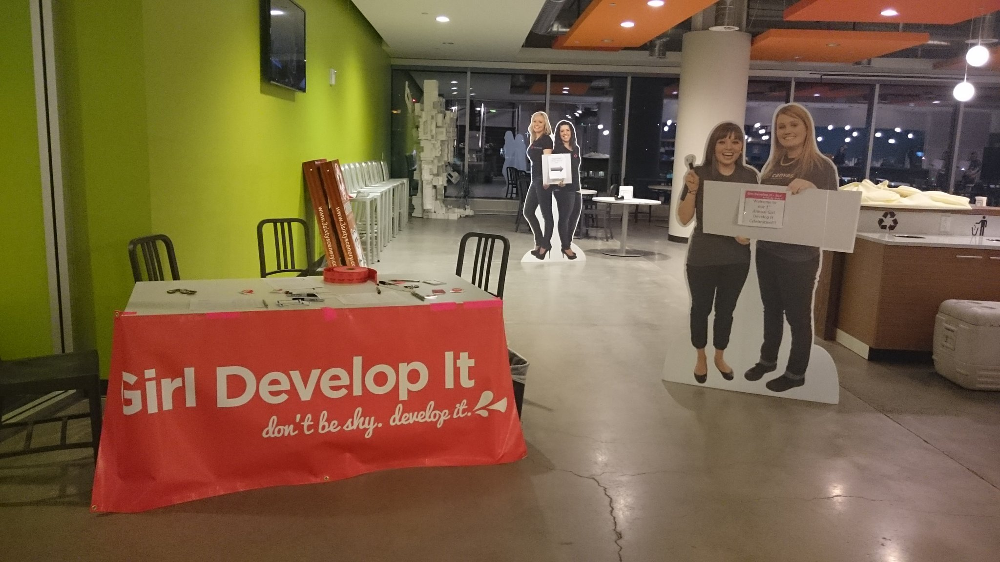

How we can help the ladies
a cultural blog
April 12, 2015

Girl Develop It Salt Lake City had a 1 yr anniversary party last month. It was so much fun!
The well-covered topic
So I know this is a (sometimes excessively) well-discussed and popular topic: lack of diversity in tech, particularly with women. It may seem cliche that I chose this topic as part of my blog for dev bootcamp because I am a feminist. But I am not a scary feminist. Not unless there's something I need to be scary for :) but for the most part, I believe in deplomatic solutions.
As a woman who has been in the tech industry for nearly a decade, I can attest to having been subject to sexual harrassment, biases, insensitivity and feelings of loneliness in a sea of non-women. I might add, however, that for the most part, the men I have had the opportunity to work with have been beyond generous and supportive, and if it were not for them, I wouldn't be where I am today, stuying to become a software developer.
So I chose this topic because I still want to have the discussion - for those who still don't believe it's bad for women in tech, I hope you will read some of the articles I have linked. I hope that people gain an understanding that it is a real problem. I also hope further that people care, and know that there are small things that can be done to make a big change.
So what is the problem?
These are well-sited stats but I will throw them in here, just as a reminder:
- Women make up only 26% of the computing workforce
- 11% of executive technical roles are held by women
- 18% of under graduate degrees are awarded to women in computer science
Some of the also often-sited issues surrounding this lack of gender diversity include:
just to name a few.
The problem, further
To add to the already layered issue, I am aware of another problem - feminists (in tech) can be scary. I am aware that the discussions can get pretty angry. I have been part of them. I have also heard colleagues and software developers say that they're worried they would say the wrong thing or end up being the bad guy no matter which way they attempted to address this issue, so they'd much rather stay out of it.
This is a really tough issue. Some people have been burned by it, others are burned out by it, others outright deny there is an issue. If we all had a little empathy for women, the underdogs of society for centuries, maybe those conversations need not be filled with defensiveness and anger.
Different angles
This may sound idealistic but when the problem is so large and difficult, and people become so sensitive about the issue, I think the key is to try to tackle the problem from a different angle. Unconscious bias is a real thing, but I have found that when I assert my presence as a (future) female developer who is just seeking to learn, and for help, the response has been positive. What I would like to suggest is tackling the system - the way we hire, interview, the language we use. I am merely curating here, suggestions that I have found elsewhere, but hopefully it provokes some thought.
Job Postings
This is a really great article where the author suggests deliberately "interrupting" the current system which doesn't take into account gender differences, and may unintentially be creating systems that are advantageous towards one gender over the other. One example sited is an experiment where one job posting listed no salary information whereas the other mentioned negotiable salary. Because women tend to be conservative in salry negotiations, the fact that the job posting encouraged salary negotiations actually helped more women to apply and negotiate for salary.
A similar suggestion I heard at a Girl Develop It event was to encourage employers to change the wording of the "required experience" section in their job listings.Make it clear that it is a wish list, rather than absolute requirements. It seems that (this is of course very generalized in it's assumptions) women tend to shy away from job listings they feel they are not perfectly qulalified for, which discourages them from applying to begin with.
How about some Feedback?
One thing I found rather frustrating, from stories I have heard from female friends who have either been attempting to enter the tech scene (or survive) in the State of Utah, is the lack of feedback from employers. I understand that feedback always has potential legal ramifications. MAYBE some people are subconsciously afraid that feedback might hurt a woman's feelings or make her cry. Maybe? When the interviewer is not willing to provide an interviewee with constructive feedback, whether it be on their code, thought processes or personal/interviewing skills, the interviewee is left on their own devices to figure out how to improve on those points. Shooting in the dark, so-to-speak. This maybe an experience that is happening across the board, for both men and women, but the challenge for women is that there are so few of us applying to these positions. If companies and the industry as a whole truly wants to hire and train more women, they must be willing to go a step further to help women land these jobs. Honest, constructive feedback could be the key.
Long story short, there are subtle but significant things that can be done to improve stats for women in tech.
Finally, this may sound like a plug, but go volunteer at organizations like Girl Develop It! I had the opportunity to volunteer as a chapter leader for Girl Develop It SLC and I always feel that we could use more male volunteers or allies - well, that is, male volunteers who understand and support the mission of GDI, which is to create and foster and environment where women feel safe to learn, and often "expose their ignorance."